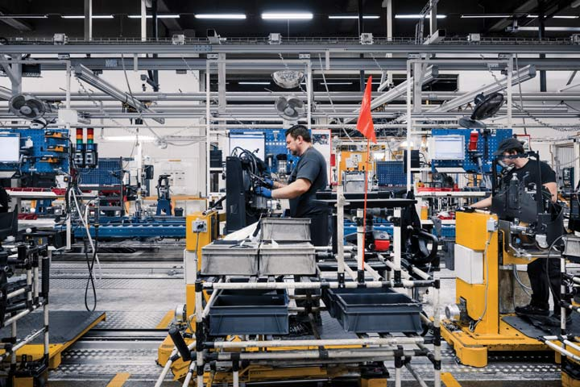

¿Qué es la gestión de la producción?
Es el proceso de planificar, organizar y controlar los recursos que una empresa necesita para fabricar sus productos. Su finalidad es cumplir las cantidades y fechas solicitadas, manteniendo los costos y la calidad bajo control.
Planificación de las operaciones
- Órdenes de trabajo: indican qué fabricar, en qué cantidad y para cuándo.
- Capacidad productiva: determina cuánto pueden producir las máquinas y los trabajadores.
- Recursos: comprende materias primas, personal, herramientas y equipos disponibles.
- Programación: establece la secuencia y el momento en que se ejecutan las operaciones.
Problemas frecuentes
- Retrasos en las órdenes por falta de materiales o planificación inadecuada.
- Cuellos de botella cuando una operación tiene menor capacidad que las demás.
- Tiempos muertos por averías, esperas o cambios de referencia demasiado largos.
Aplicaciones industriales
- Programar la fabricación de envases plásticos según la fecha de entrega de los clientes.
- Distribuir las órdenes entre las máquinas inyectoras para equilibrar las cargas de trabajo.
- Coordinar la disponibilidad de resina, moldes y operarios antes de iniciar cada turno.

Problemas, causas y acciones de mejora
| Problema | Posibles causas | Acciones de mejora |
|---|---|---|
| Retrasos | Materiales faltantes y mala programación. | Planificar órdenes y verificar materiales. |
| Cuellos de botella | Capacidad insuficiente en una operación. | Balancear cargas y analizar capacidades. |
| Tiempos muertos | Averías, esperas y cambios de molde. | Mejorar mantenimiento y preparación de equipos. |